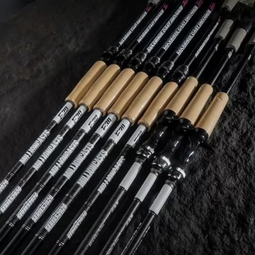
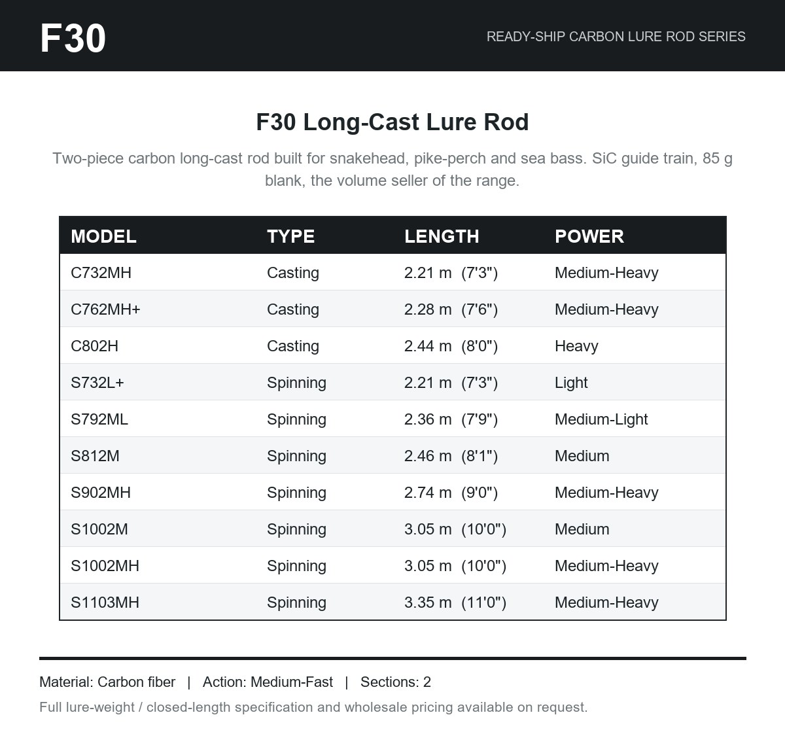
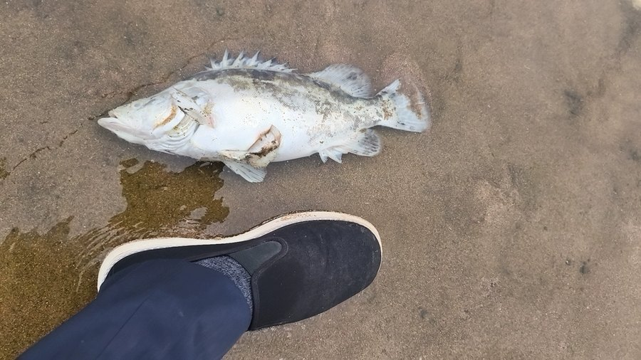
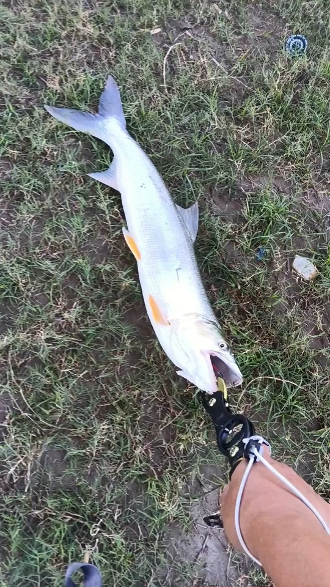

F30 Long-Cast Lure Rod
Two-piece carbon long-cast rod built for snakehead, pike-perch and sea bass. SiC guide train, 85 g blank, the volume seller of the range.
Rod weight85 g
MaterialCarbon fiber
ActionMedium-Fast
Sections2
Source: the maker's own store listing.
| Our SKU | Model | Type | Length | Power | Lure |
|---|---|---|---|---|---|
| RS-F30-C732MH | C732MH | Casting | 2.21 m (7'3") | Medium-Heavy | — |
| RS-F30-C762MH+ | C762MH+ | Casting | 2.28 m (7'6") | Medium-Heavy | — |
| RS-F30-C802H | C802H | Casting | 2.44 m (8'0") | Heavy | — |
| RS-F30-S732L+ | S732L+ | Spinning | 2.21 m (7'3") | Light | — |
| RS-F30-S792ML | S792ML | Spinning | 2.36 m (7'9") | Medium-Light | — |
| RS-F30-S812M | S812M | Spinning | 2.46 m (8'1") | Medium | — |
| RS-F30-S902MH | S902MH | Spinning | 2.74 m (9'0") | Medium-Heavy | — |
| RS-F30-S1002M | S1002M | Spinning | 3.05 m (10'0") | Medium | — |
| RS-F30-S1002MH | S1002MH | Spinning | 3.05 m (10'0") | Medium-Heavy | — |
| RS-F30-S1103MH | S1103MH | Spinning | 3.35 m (11'0") | Medium-Heavy | — |
Order by our SKU. The model code next to it is the maker's own reference for the same rod. Lure range shown where the maker publishes it — ask us for the full model sheet.